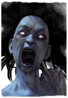
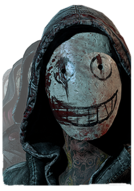
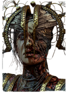
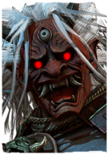
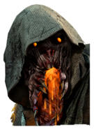
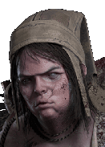
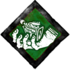

Убийцы

Дух (англ. "The Spirit") — один из персонажей игры Dead by Daylight женского пола в роли убийцы. Становится доступной для выбора при выполнении одного из условий:
Дух
- Покупка платного DLC "Прервавшийся род"
- Активация персонажа в магазине за 500 золотых клеток или 9000 радужных осколков
Её отец влез в долги, которые без конца росли. Он стал работать двойную смену в надежде получить повышение. Именно тогда он начал плохо спать. Шёпот, раздающийся из тьмы, мог не давать ему спать всю ночь, напоминая о безнадежности ситуации. Истощенный, Он начал терять ощущение реальности. Он боролся и, стараясь отрицать то, что голос шепчет ночи напролёт, отец Рин решился на отчаянный шаг. Он встретился с руководством и объяснил свою ситуацию. Он молил о повышении, поощрении, хотя бы отпуске - о чём угодно.
Его просьба была отклонена. Компания недавно запустила дефектную производственную линию, которая обошлась им очень дорого. Кого-то нужно было привлечь к ответственности и отец Рин идеально подходил на эту роль. Он был уволен после двадцати двух лет службы.
В тот вечер Рин вернулась домой поздно, нужно было обслужить клиентов, засидевшихся в ресторане. Поставив свой велосипед в сарай, она услышала, как кричит её мать.

Личные навыки

Ненависть

Порча: проклятая земля

Ярость духа

Легион (англ. "The Legion") — один из персонажей игры Dead by Daylight в роли убийцы. Становится доступным для выбора при выполнении одного из условий:
Легион
- Покупка платного DLC "Тьма вокруг нас"
- Активация персонажа в магазине за 500 золотых клеток или 9000 радужных осколков
Ормонд был маленьким и скучным городком с шестью тысячами жителей, в котором большую часть года царила безликая зима. Фрэнк изо всех сил старался попасть в новую приемную семью, но передумал, когда однажды заметил милую девушку по имени Джули. Красивая и популярная, она не хотела всю жизнь провести в Ормонде. Во Фрэнке, прибывшем из других мест, она видела свой билет на свободу. Он начал ходить на вечеринки, что устраивала Джули. Все гости там были младше него. Такую публику было легко впечатлить, и Фрэнку это нравилось. Там он познакомился со вспыльчивым Джо, который любил выпендриться, а также с тихой и наивной Сьюзи, лучшей подружкой Джули.

Личные навыки

Разлат

Железная дева

Безумное упорство

Чума (англ. "The Plague") — один из персонажей игры Dead by Daylight женского пола в роли убийцы. Становится доступным для выбора при выполнении одного из условий:
Чума
- Покупка платного DLC "Погибель верных"
- Активация персонажа в магазине за 500 золотых клеток или 9000 радужных осколков
Повзрослев, она начала прислуживать высшим жрицам на ежегодных церемониях почитания морского козла - бога воды и созидания. Она шла по огромным гипостильным залам, поводя курильницей, и густые черные клубы дыма поднимались к холодным каменным колоннам и там растворялись в воздухе. Тревога уступила место блаженству, и она ощущала близость богов как никогда. Каждый день она трудилась не покладая рук, выполняла свои обязанности и принимала новые, прислуживая жрицам во время ритуалов очищения.
Но помощи требовалось все больше и больше. За стенами храма свирепствовала эпидемия страшной чумы, и обряды очищения проводились каждый день. За несколько месяцев болезнь поразила всех жрецов. Они ослабели настолько, что не могли провести даже простейший ритуал, и только неофитка Адирис, которая присутствовала на каждой церемонии, могла занять их место.
Девушка, взволнованная предстоящей первой церемонией, бродила по храмовому святилищу, и когда она зажгла свечи, то заметила узкий проход на его дальней стене. Он вывел Адирис в склеп под святилищем, где не было ничего, кроме золотой статуи женщины с раскинутыми руками, с увешанными самоцветами пальцами. Это был знак, которого она так долго ждала!

Личные навыки

Темная преданность

Вмешательство скверны

Заразительный ужас

Они (англ. "Oni") — один из персонажей игры Dead by Daylight в роли убийцы. Становится доступным для выбора при выполнении одного из условий:
Они
- Покупка платного DLC "Проклятое наследие"
- Активация персонажа в магазине за 500 золотых клеток или 9000 радужных осколков
Твёрдо решив обелить имя своего рода, Казан стал убивать любого, кто посмеет назвать его Они. Он не понимал, чем заслужил подобное оскорбление. Разве он не победил лучших воинов? Разве не облагородил сословие самураев, избавив эти края от обманщиков? Как у людей поворачивался язык называть его безмозглым демоном? Может, его звали так за убийство даже самых грозных противников на поле боя? Или за сотни голов, проломленных боевой дубинкой? За «трофеи», отрезаемые у жертв? Но вопросы вопросами, а вынести подобные обращения он не мог. Зловещий голос в голове воина требовал зарубить повелителя, который позорит его имя.

Личные навыки

Тактика зинсин

Отзвук крови

Возмездие

Мор (англ. "The Blight") — один из персонажей игры Dead by Daylight в роли убийцы. Становится доступным для выбора при выполнении одного из условий:
Мор
- Покупка платного DLC "Падение за грань"
- Активация персонажа в магазине за 500 золотых клеток или 9000 радужных осколков
Когда Тальбот вырос, он быстро понял, чего хочет достичь и насколько сомнительные средства готов применять. Он учился в Лондонской медицинской школе и демонстрировал выдающиеся успехи, несмотря на несколько выговоров от преподавателей. Его готовность раздвигать границы дозволенного обеспечила ему место в Британской Ост-Индской компании, а через несколько лет он уже занимал должность ведущего химика. Через какое-то время он совершил одно из своих величайших открытий, создав вещество, которое могло увеличить продуктивность рабочего, одновременно снижая потребность в отдыхе. За это он получил в награду секретную лабораторию под лагерем военнопленных на острове Дайер.

Личные навыки

Порча: благоволение крови

Порча: не-смерь

Драконья хватка

Близнецы (англ. "The Twins") — один из персонажей игры Dead by Daylight в роли убийцы. Становится доступным для выбора при выполнении одного из условий:
Близнецы
- Покупка платного DLC "Родственные узы"
- Активация персонажа в магазине за 500 золотых клеток или 9000 радужных осколков
Близнецы почти не помнили свои младенческие годы, но это время можно было с наименьшей натяжкой назвать нормальной жизнью. Им казалось, что странствия с матерью по всей Франции в попытках скрыться от людей было обычным делом для всех детей. В пятилетнем возрасте их "игра" осложнилась из-за болезни матери. У бледной и измученной Мадлен не было иного выбора, кроме как поручить Шарлотте найти хоть немного еды. Она замотала девочку в тряпки, скрывающие выпирающее тело Виктора. Малышка вышла из лесной чащи и отправилась в ближайший городок. Она выглядела странно, но старательно делала то, чему ее учили: дождалась удачного момента на рынке и стащила подвернувшуюся снедь. Так она победила в новой игре, но ненадолго.

Личные навыки
Добивание

Скипидом

Притеснение
Dead By Daylight
Контакты:
Помощь:
предложения отправлят сюда
@mail: dbd-help@mail.ru
D
E
A
D
E
A
D
B
Y
Y
D
A
Y
L
I
G
H
T
A
Y
L
I
G
H
T